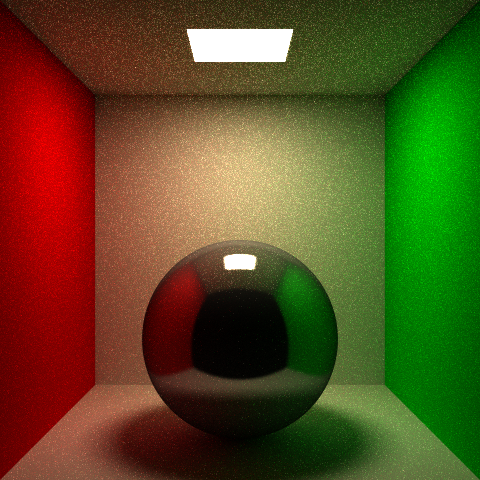
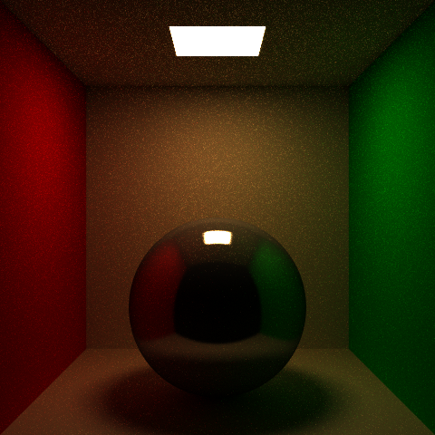

CSE 168 Final Project: Volumetric Path Tracing
Christos Enotiadis · Spring 2026
Project Proposal
Extending my HW1-4 path tracer with participating media. Hero image target is a scene with visible light shafts through fog or haze, e.g. a window beaming into a dusty interior.
- Whats already there. HW1-4 raytracer in C++ single header style. BVH, iterative path tracer in pathTrace(), NEE and MIS for surface direct lighting in shadeMIS() with the power heuristic, russian roulette, cosine and brdf importance sampling, Phong + GGX BRDFs through evalBRDF(). Integrator skeleton is in place, just need to add medium handling at each bounce.
- Medium representation. New Medium struct with absorption sigma_a, scattering sigma_s, and HG parameter g. Derived sigma_t = sigma_a + sigma_s and albedo = sigma_s / sigma_t. Scene gets one homogeneous medium for the whole world to start, parser handles a few new tokens.
- Volumetric integrator. Each bounce in pathTrace() samples a free flight distance t = -log(1-xi) / sigma_t before calling traceScene. If t < hit.t the next interaction is a scattering event in the medium, otherwise its the surface hit as usual. Throughput picks up exp(-sigma_t * d) along the segment for transmittance.
- Henyey-Greenstein phase function. Closed form, sample with the inverse CDF on cosTheta, analytic pdf for MIS. At a medium scattering vertex this replaces the BSDF role.
- MIS at scattering events. Same pattern as the surface MIS from HW4, except the BSDF becomes the phase function and the shadow ray needs the transmittance factor applied through the medium. This is the cleanest extension of what HW4 was already doing.
- Hero scene. Interior with one strong directional or area light source outside a window, foggy room. Show Beer-Lambert attenuation along the shaft and soft shadow boundaries through the medium, with existing GGX materials still rendering on the surfaces.
- Stretch goal, only if homogeneous lands clean and early. Heterogeneous media via delta tracking with a constant majorant, ratio tracking for unbiased transmittance on shadow rays (Novak et al. 2014), procedural noise grid for a smoke plume. Skipping this in the main scope because variance gets ugly fast and id rather ship a working homogeneous renderer than a half debugged heterogeneous one.
Milestone Progress
First stage of volumetric path tracing is working. A global homogeneous absorbing medium with Beer-Lambert attenuation. About 30 lines added across Scene.h, Raytracer.h, and Parser.h. Existing scenes without a medium specified render identically to HW4.
What was added:
- Medium struct on the Scene holding sigma_a and sigma_s. sigma_t = sigma_a + sigma_s.
- transmittance(d, sc) helper returning glm::exp(-sigma_t * d) componentwise so colored fog works.
- Integration in pathTrace: T *= transmittance(h.t, sc) on each segment between hits. NEE and BRDF samples in shadeMIS and shadeDirect get the same attenuation along their light-direction segments.
- Parser tokens sigma_a and sigma_s for scene files.
The three images below show the same cornell box rendered with identical MIS path tracer settings, varying only the medium parameters.

Baseline (no medium). HW4 path tracer output for reference.

Light fog. sigma_a = (0.10, 0.15, 0.25), sigma_s = 0.

Heavy fog. sigma_a = (0.25, 0.35, 0.50), sigma_s = 0.
The warm color cast in the fogged renders is the expected behavior. Blue is absorbed most and red least (sigma_a_b > sigma_a_g > sigma_a_r), so what reaches the camera is biased toward warm wavelengths. Depth-dependent attenuation is visible: the back wall and the sphere are noticeably dimmer than surfaces close to the camera, and the soft floor shadow under the sphere takes on a warm tint because that bounce light travels farther through the medium before reaching the camera.
This is absorption only. No scattering events, no in-scattering, no phase function. With sigma_s = 0 the renderer is physically correct (no missing in-scattering term to compensate for).
Next Steps
Add free-flight sampling at each bounce: sample t = -log(1-xi) / sigma_t before each traceScene call. If t < hit.t the next vertex is a medium scattering event instead of a surface hit. At the scattering vertex, sample a new direction with the Henyey-Greenstein phase function using its closed-form inverse CDF on cosTheta. Extend the surface MIS in shadeMIS to medium vertices. The BSDF role gets replaced by the HG phase function, and shadow ray contributions are multiplied by transmittance through the medium. Then compose the hero scene with a strong window source illuminating a foggy interior, where the new in-scattering term should produce visible light shafts.
Stretch stays the same: delta tracking for heterogeneous media on a procedural noise grid, ratio tracking for unbiased transmittance on shadow rays. Only if the homogeneous path lands cleanly and there is time.